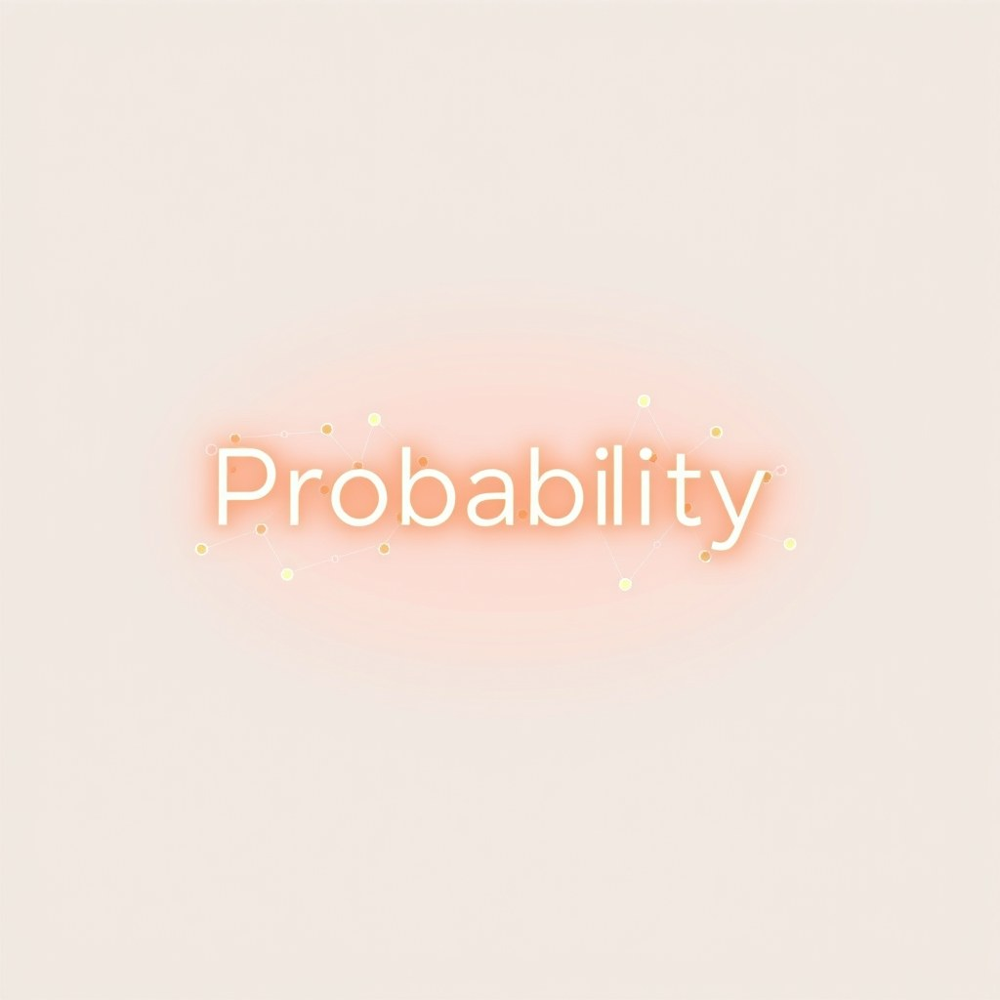
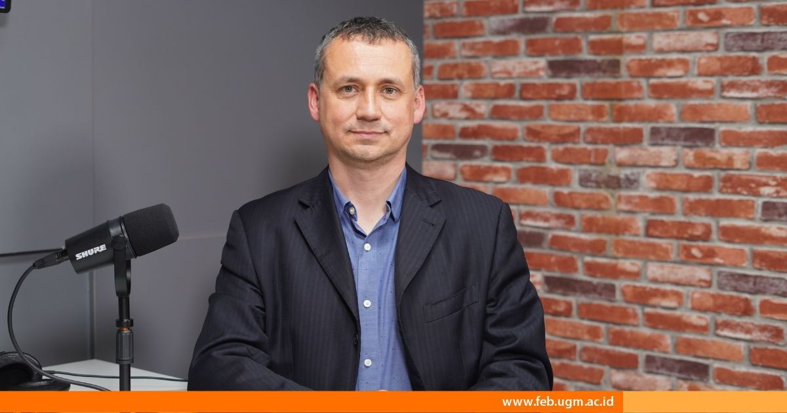

Fenomena di mana kecerdasan buatan menyajikan informasi keliru atau kutipan fiktif dengan nada sangat meyakinkan dikenal dengan istilah halusinasi AI. Banyak pengguna mengira ini adalah kesalahan teknis sementara yang akan hilang seiring canggihnya pembaruan perangkat lunak. Padahal, jika kita membedah cara kerjanya secara ilmiah, halusinasi adalah konsekuensi logis dari fondasi utama model bahasa besar (Large Language Model/LLM).
Catatan penting dari pembahasan dasar sebelumnya: AI generatif pada dasarnya adalah mesin pemroses statistik, bukan makhluk yang bisa berpikir, memiliki kesadaran, atau memahami arti dari kata-kata yang dihasilkannya. Memahami prinsip ini membantu kita bersikap kritis saat menjadikan kecerdasan buatan penunjang kerja harian.
Apa Itu Halusinasi AI dan Kenapa Sifatnya Alami?

Secara sederhana, halusinasi AI adalah kondisi ketika model AI menghasilkan jawaban yang terdengar masuk akal dan runtut, namun tidak didasarkan pada data kenyataan. Mengapa fenomena ini disebut sifat alami? Karena sistem AI tidak memiliki akses ke database fakta internal yang berfungsi seperti ensiklopedia pasti. AI bekerja dengan memprediksi token (potongan kata) berikutnya berdasarkan pola raksasa dari data pelatihan.
Pakar AI Ethan Mollick dalam bukunya Co-intelligence: Living and Working with AI menegaskan bahwa halusinasi bukanlah sekadar bug atau cacat sementara, melainkan konsekuensi langsung dari cara kerja probabilitas token. Sifat acak yang memicu halusinasi ini adalah mekanisme yang sama yang memberikan AI kemampuan kreatif untuk menghubungkan dua konsep berbeda menjadi ide baru yang segar.
Ketika AI dilatih dengan miliaran halaman teks dari internet, sistem tersebut belajar memahami struktur bahasa, tata bahasa, dan hubungan asosiatif antar-kata. Namun, internet memuat berbagai informasi yang kontradiktif, opini, hingga fiksi. Karena AI tidak memiliki filter verifikasi kebenaran bawaan saat belajar, sistem ini menyerap seluruh pola tersebut sebagai kemungkinan statistik belaka.
Bayangkan AI seperti seorang peramal ulung di pasar malam. Peramal tersebut tidak benar-benar melihat masa depan atau memiliki buku catatan ajaib. Namun, ia sangat mahir merangkai kata-kata indah yang terdengar sangat masuk akal, persuasif, dan meyakinkan di telinga pendengarnya. Selama susunan kata-katanya terdengar pas, peramal itu akan terus berbicara tanpa pernah tahu apakah ucapannya benar-benar nyata atau murni karangan.
Kenapa Memahami Masalah Ini Sangat Penting Buat Kamu?
Jika kamu memanfaatkan teknologi AI untuk menyusun dokumen pekerjaan, membuat konten pemasaran, atau membantu riset usaha, ketidakpahaman atas halusinasi bisa berakibat fatal bagi kredibilitas profesionalmu. Kamu bisa saja tanpa sengaja menyebarkan berita bohong, menggunakan dasar hukum yang tidak pernah ada, atau memberikan angka analisis pasar yang salah total kepada klien.
Masalah ini dialami secara nyata di berbagai sektor kerja dan akademik. Diskusi publik di FEB UGM menyoroti bahwa penggunaan AI di lingkungan kampus maupun profesional berada di antara dorongan efisiensi dan risiko pelanggaran etika akademik akibat data fiktif. Ketika pengguna percaya 100% pada kalimat AI yang rapi, ketelitian verifikasi manusia cenderung menurun akibat fenomena yang dinamakan automation bias atau kecenderungan terlalu mempercayai keluaran komputer.
Dalam dunia hukum internasional, pernah terjadi kasus seorang pengacara di Amerika Serikat yang mengajukan berkas persidangan resmi yang memuat enam rujukan putusan hakim terdahulu. Setelah diperiksa oleh hakim persidangan, seluruh nomor kasus, nama terdakwa, dan rujukan hukum tersebut ternyata 100% fiktif hasil karangan AI. Pengacara tersebut dijatuhi sanksi berat dan denda karena menganggap AI alat pencari fakta yang seratus persen terpercaya.
Kerugian serupa bisa menimpa pemilik bisnis kecil. Bayangkan jika kamu memakai AI untuk menghitung estimasi biaya pajak atau regulasi ekspor-impor, lalu menerima draf yang kelihatan sangat meyakinkan tetapi salah aturan. Tanpa double-check ke dokumen pemerintah resmi, usahamu bisa terkena sanksi administratif yang menguras sisa modal operasional.
Cara Kerja Mesin Prediksi AI: Langkah demi Langkah
Agar kamu paham mengapa AI bisa begitu percaya diri saat memberikan jawaban salah, mari kita bongkar empat urutan langkah teknis mesin prediksi ini saat memproses perintahmu:
Menerima Perintah dan Memecah Teks Jadi Token
Saat kamu mengetik pertanyaan, sistem memecah seluruh kalimat menjadi potongan-potongan kecil bernama token. Satu token bisa berupa satu kata tunggal, imbuhan kata, atau kumpulan karakter tertentu. Misalnya, kata "perkembangan" bisa dipecah menjadi token "per", "kembang", dan "an".
Menghitung Probabilitas Statistik Kata Berikutnya
AI menganalisis token input yang diterimanya, lalu memindai miliaran pola hubungan kata yang telah dipelajarinya. AI menghitung daftar persentase probabilitas untuk memilih token berikutnya. Algoritma dasarnya beroperasi pada pertanyaan matematis: "Berdasarkan pola susunan kalimat manusia, kata apa yang statistik keterhubungannya paling tinggi untuk menyambung kalimat ini?"
Mengatur Tingkat Keacakan (Parameter Temperature)
Sistem menerapkan parameter keacakan (temperature) agar jawaban AI tidak terlalu kaku, monoton, atau selalu sama. Jika tingkat keacakan dinaikkan sedikit agar tulisan terasa lebih alami dan bervariasi, probabilitas AI memilih kata yang kurang akurat atau menyimpang dari fakta juga otomatis meningkat pesat.
Mencetak Kata demi Kata Tanpa Memeriksa Kenyataan
AI mencetak kata demi kata secara autoregresif (kata yang baru dicetak langsung menjadi input untuk memprediksi kata setelahnya). Karena tidak memiliki mekanisme pemeriksaan kebenaran alami atau ruang penyimpanan memori kenyataan, AI menyusun kalimat salah tersebut dengan struktur tata bahasa yang sempurna dan nada bicara yang penuh keyakinan.
Jika dalam proses prediksi satu kata pertama saja AI memilih token yang melenceng akibat nilai keacakan, kata-kata berikutnya akan terus berpatokan pada kata yang lenceng tersebut. Akibatnya, makin panjang paragraf yang dicetak AI, makin jauh halusinasi fakta yang dirangkainya.
Sama seperti saat kita mempelajari cara optimasi profil pribadi agar mudah terbaca sistem AI, kita perlu menyadari bahwa mesin pencari AI hanya membaca pola, kata kunci, dan frekuensi teks, alih-alih mampu menilai kejujuran serta kebenaran dari riwayat profil seseorang secara riil.
Contoh Nyata Halusinasi AI dari Awal sampai Akhir

Mari kita bedah skenario contoh penggunaan sehari-hari untuk melihat bagaimana halusinasi terbentuk secara bertahap. Misalkan kamu seorang pemilik toko online yang sedang membuat draf aturan garansi dan meminta AI mencari referensi undang-undang perlindungan konsumen di Indonesia.
Pertanyaan Pengguna (Prompt Input):
"Tuliskan kutipan pasal dan nomor undang-undang di Indonesia yang mengatur syarat pengembalian barang belanjaan online beserta nama ahli hukum yang mendukungnya."
Jawaban yang Dihasilkan AI (Halusinasi Fiktif):
"Berdasarkan Pasal 88 Ayat 3 UU No. 44 Tahun 2019 tentang Transaksi Digital, konsumen berhak mengembalikan barang dalam waktu 14 hari. Hal ini didukung oleh Prof. Dr. Ahmad Subarkah dari Universitas Nusantara yang menyatakan bahwa hak retur adalah kewajiban mutlak pedagang."
Jika kamu langsung menempel kalimat ini ke dalam proposal bisnis atau dokumen perjanjian pelanggan tanpa pengecekan manual, reputasi usahamu menjadi taruhannya. Karangan ini terjadi karena algoritma AI menggabungkan istilah "Pasal", "UU", "Transaksi Digital", "Prof. Dr.", dan "Universitas" yang memang secara statistik sangat sering muncul berdekatan dalam dokumen hukum yang pernah dipelajarinya.
AI tidak bermaksud 'membohongi' pengguna. Mesin ini hanya menyelesaikan tugas statistik: menyusun rentetan kata yang secara tata bahasa paling memuaskan pola perintah yang kamu berikan.
Kesalahan Umum Saat Menggunakan AI dan Cara Mengatasinya
Banyak pekerja pemula hingga profesional terjebak dalam beberapa kesalahan persepsi saat memanfaatkan teknologi ini dalam pekerjaan sehari-hari. Berikut adalah empat kesalahan utama beserta solusi praktisnya:
| Kesalahan Umum | Risiko Masalah | Perbaikan / Solusi Praktis |
|---|---|---|
| Menganggap AI mirip ensiklopedia pasti atau mesin pencari fakta tanpa cela. | Memakai angka kuantitatif, kutipan hukum, atau rujukan fiktif dalam laporan resmi bisnis. | Gunakan AI khusus untuk merangkai draf kata atau struktur tulisan, lalu periksa semua fakta secara manual lewat dokumen resmi. |
| Tergoda oleh gaya bahasa AI yang sangat santun, profesional, dan penuh keyakinan. | Terjebak kecerobohan verifikasi karena mengira tulisan yang rapi pasti benar secara isi. | Makin formal dan meyakinkan nada bicara AI, makin ketat pengguna wajib memeriksa rujukan angka dan nama yang disebutkan. |
| Menanyakan kembali ke AI: "Apakah kamu yakin jawaban ini 100% benar?" | Sistem AI akan kembali menghitung kalimat statistik baru untuk membela jawaban salah sebelumnya. | Uji klaim AI dengan meminta dokumen sumber asli, nomor referensi resmi, atau melakukan verifikasi silang di mesin pencari. |
| Memberikan instruksi terbuka tanpa dokumen acuan (Zero-shot prompting). | AI terpaksa menebak-nebak fakta dari ingatan pola statistik luasnya yang rawan menyimpang. | Lampirkan teks acuan atau dokumen referensi asli ke dalam perintah, lalu minta AI hanya menjawab berdasarkan teks tersebut. |
Sama halnya ketika kamu sedang belajar menyusun strategi bisnis baru atau mempraktikkan proses validasi ide sebelum eksekusi produk, ingatlah bahwa riset pasar tetap membutuhkan pembuktian langsung ke manusia nyata dan data lapangan, bukan sekadar mempercayai jawaban asumsi dari model AI.
Cara Mengecek Apakah Kamu Sudah Benar-Benar Paham
Untuk memastikan kamu tidak sekadar membaca tulisan ini melainkan benar-benar menguasai konsep dasar halusinasi AI, coba tes dirimu dengan menjawab tiga pertanyaan ini tanpa melihat kembali paragraf di atas:
- Pertanyaan 1: Mengapa kecerdasan buatan tidak bisa disebut 'berbohong' dalam pengertian manusia saat menyajikan informasi yang keliru?
- Pertanyaan 2: Apa hubungan antara tingkat keacakan (parameter temperature) saat AI menyusun kata dengan potensi munculnya halusinasi fakta?
- Pertanyaan 3: Langkah konkret apa yang paling pertama harus kamu lakukan ketika sistem AI memberikan kutipan pasal undang-undang, data statistik, atau nama pakar?
Jika kamu mampu menjelaskan dengan bahasamu sendiri bahwa AI bekerja murni berdasarkan perhitungan probabilitas susunan kata tanpa kesadaran fakta internal, selamat! Kamu sudah memahami batasan teknis mesin ini dan siap memanfaatkannya secara bijak serta aman dalam alur kerja harianmu.
Sumber
- Membedah Penggunaan AI di Kampus: Antara Produktivitas dan Etika — FEB UGM · 12 Agu 2026